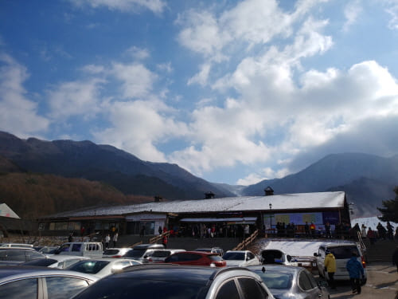

무주 덕유산 향적봉 여행기(겨울산행)
덕유산은 주봉은 향적봉(1614m)로 남덕유산(1507m)과 쌍봉을 이룬다.일정 : 2020년 1월 12일
설천하우스 주차장에서 하차하여 곤드라를 타고
설천봉에서 하차하여 그곳에서 향적봉으로 올라갔다.

곤드라 하차장

향적봉 대피소
ㅆ다
Fun
재미롭거나 인상적인 것바위위의 나무
비, 눈, 바람을 견디고 바위위에 뿌리를 내리고 있다
눈꽃나무
겨울에만 볼수 있는 눈꽃나무